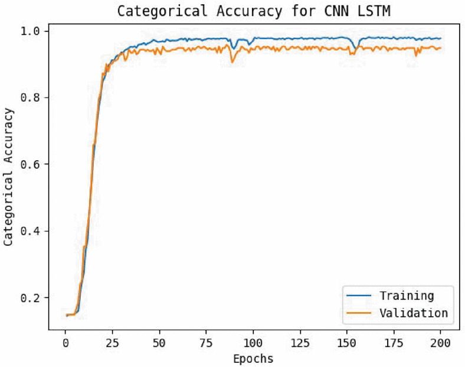
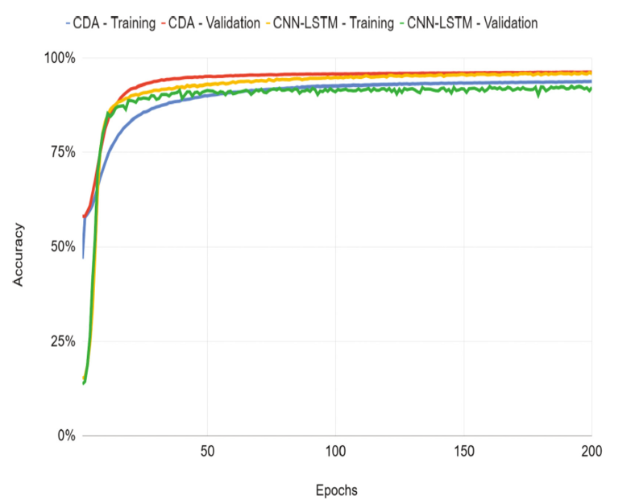

Welcome to Protein Scaffold Filler Tool.
Generate Complete Protein Sequence Fill Gaps Of Scaffold Train Model and Predict on New Scaffold
Features
Our Protein Scaffold Filler employs AI, including machine learning, deep learning and generative AI techniques to effortlessly fill gaps in protein scaffolds, creating complete sequences. Currently, we have trained the model on Mabcampath data, P5A, P15 and P18 proteoforms data. You can try to fill the simulated scaffold of these data or train on new scaffold on our system and fill the scaffold.
Under Construction
How it Works?
Abstract: We are on the verge of a post-genomics era in which
whole protein sequencing will be quickly carried out. Protein se-
quencing plays an important role in identifying protein functions,
analyzing protein-protein interactions, and characterizing post-
translational modifications, etc. The protein sequencing problem
is to determine the complete sequence of amino acids in proteins...........

Abstract: De novo protein sequencing is a valuable task in proteomics,
yet it is not a fully solved problem. Many state-of-the-art approaches
use top-down and bottom-up tandem mass spectrometry (MS/MS) to
sequence proteins. However, these approaches often produce protein scaffolds,
which are incomplete protein sequences with gaps to fill between
contiguous regions..........

Contributors
This work is supported by the National Science Foundation of the United States under Award 2307571, 2307572 and 2307573. We thank everyone who has helped us directly or indirectly.